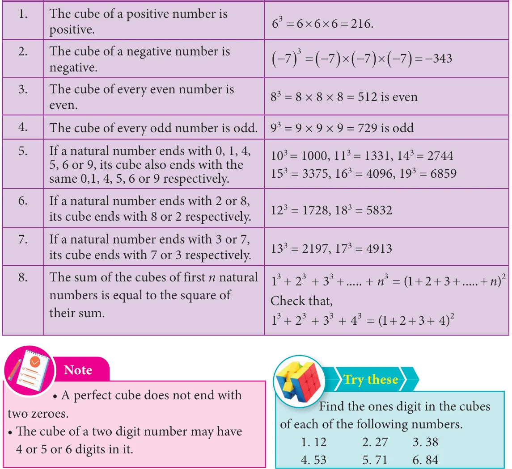
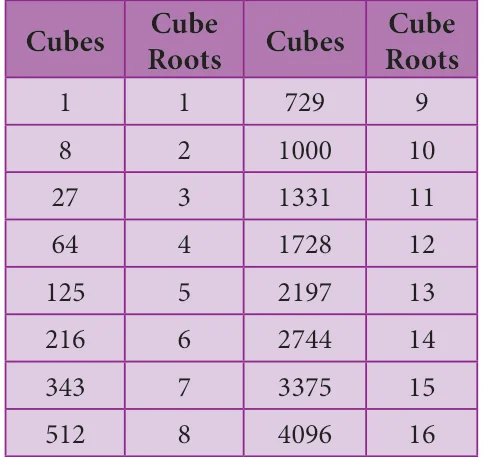
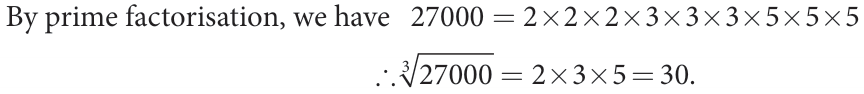
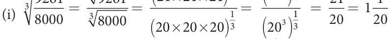

<!DOCTYPE html>
<html lang="en">
<head>
<meta charset="UTF-8">
<meta name="viewport" content="width=device-width,initial-scale=1">
<title>1.8 Cubes and Cube Roots — Numbers</title>
<meta name="description" content="Class 8 Mathematics · Numbers · 1.8 Cubes and Cube Roots">
<link rel="icon" href="data:image/svg+xml,<svg xmlns='http://www.w3.org/2000/svg' viewBox='0 0 100 100'><text y='.9em' font-size='90'>📘</text></svg>">
<link rel="stylesheet" href="../../../assets/book.css">
<link rel="stylesheet" href="https://cdn.jsdelivr.net/npm/katex@0.16.11/dist/katex.min.css" crossorigin="anonymous">
</head>
<body>
<header class="topbar">
<div class="topbar-in">
  <div class="crumb">
    <span class="c1"><a href="../../../index.html">Library</a> · <a href="../../index.html">Class 8 Mathematics</a></span>
    <span class="c2">Numbers · 1.8 Cubes and Cube Roots</span>
  </div>
  <a class="tb-btn" data-nav="prev" href="../../01-numbers/11-exercise-1.4/index.html" title="Exercise 1.4">←</a>
  <details class="drawer"><summary class="tb-btn" title="Sections in this chapter">☰</summary>
<div class="drawer-panel"><div class="dh">Numbers</div><a href="../01-chapter-opener/index.html">Chapter opener; 1.1 Introduction</a><a href="../02-rational-numbers-1.2/index.html">1.2 Rational Numbers</a><a href="../03-exercise-1.1/index.html">Exercise 1.1</a><a href="../04-basic-arithmetic-operations-on-rational-numbers-1.3/index.html">1.3 Basic Arithmetic Operations on Rational Numbers</a><a href="../05-word-problems-on-the-basic-operations-1.4/index.html">1.4 Word Problems on the basic operations</a><a href="../06-exercise-1.2/index.html">Exercise 1.2</a><a href="../07-properties-of-rational-numbers-1.5/index.html">1.5 Properties of Rational Numbers</a><a href="../08-exercise-1.3/index.html">Exercise 1.3</a><a href="../09-introduction-to-square-numbers-1.6/index.html">1.6 Introduction to Square Numbers</a><a href="../10-square-root-1.7/index.html">1.7 Square Root</a><a href="../11-exercise-1.4/index.html">Exercise 1.4</a><a href="../12-cubes-and-cube-roots-1.8/index.html" aria-current="page">1.8 Cubes and Cube Roots</a><a href="../13-exercise-1.5/index.html">Exercise 1.5</a><a href="../14-exponents-and-powers-1.9/index.html">1.9 Exponents and Powers</a><a href="../15-exercise-1.6/index.html">Exercise 1.6</a><a href="../16-exercise-1.7/index.html">Exercise 1.7</a><a href="../17-summary/index.html">SUMMARY</a></div></details>
  <a class="tb-btn" data-nav="next" href="../../01-numbers/13-exercise-1.5/index.html" title="Exercise 1.5">→</a>
  <button class="tb-btn" data-theme-toggle title="Toggle light / dark" aria-label="Toggle light or dark theme">◐</button>
</div>
<div class="progress"><span style="width:11.1%"></span></div>
</header>
<main class="wrap">
<div class="sec-head">
  <p class="eyebrow"><a href="../index.html">Chapter 1 · Numbers</a></p>
  <h1>1.8 Cubes and Cube Roots</h1>
  <p class="sec-meta">Textbook pages 36–38 · 8 figures</p>
</div>
<article class="prose">
<p>If you multiply a number by itself and then by itself again, the result is a cube number. This means that a cube number is a number that is the product of three identical numbers.</p>
<p>If n is a number, its cube is represented by n . Cube numbers can be represented visually as 3D cubes comprising of single unit cubes. Cube numbers are also called as perfect cubes. The perfect cubes of natural numbers are 1, 8, 27, 64, 125, 216, ... and so on.</p>
<figure class="fig table-fig wide"></figure>
<p>\(\frac{1.8.1}{S\). No.} Properties of cubes of numbers</p>
<figure class="fig table-fig wide"></figure>
<h3 id="s-1-8-2-cube-root">1.8.2 Cube root</h3>
<p>The cube root of a number is the value that when cubed gives the original number. For example, the cube root of 27 is 3 because when 3 is cubed we get 27.</p>
<figure class="fig table-fig side-fig"></figure>
<p>Notation:</p>
<p>The cube root of a number x is denoted as</p>
<div class="mathblock"><p>x (or) \(x \frac{1}{3.}\)</p></div>
<p>Here are some more cubes and cube roots: \(^{3} 1 = 1\) since \(1^{3} = 1\), \(^{3} 8 = 2\) since \(2^{3} = 8\), \(^{3} 27 = 3\) since \(3^{3} = 27\), \(^{3} 64 = 4\) since \(4^{3} = 64\), \(^{3} 125 = 5\) since \(5^{3} = 125\) and so on.</p>
<h4 class="callout-h" id="s-example-1-32">Example 1.32</h4>
<p>Is 400 a perfect cube?</p>
<h4 class="callout-h" id="s-solution">Solution:</h4>
<p>By prime factorisation, we have \(400 = 2 \times 2 \times 2 \times 2 \times 5 \times 5\).</p>
<p>There is only one triplet. To make further triplets, we will need two more 2’s and one more 5. Therefore, 400 is not a perfect cube.</p>
<h4 class="callout-h" id="s-example-1-33">Example 1.33</h4>
<p>Find the smallest number by which 675 must be multiplied to obtain a perfect cube. Solution: 675 We find that, \(675 = 3 \times 3 \times 3 \times 5 \times 5\) …………….(1) \(\frac{3}{3} 225\) Grouping the prime factors of 675 as triplets, we are left over with \(5 \times 5.We\) need one more 5 to make it a perfect cube. \(\frac{3}{5} 75 25\)</p>
<p>To make 675 a perfect cube, multiply both sides of (1) by 5.</p>
<div class="mathblock"><p>\(675 \times 5 = 3 \times 3 \times 3 \times 5 \times 5 \times 5 3375 = 3 \times 3 \times 3 \times 5 \times 5 \times 5\) Think</p></div>
<p>Now, 3375 is a perfect cube. Thus, the smallest In this question, if the word required number to multiply 675 such that the new ‘multiplied’ is replaced by the word number perfect cube is 5. ‘divided’, how will the solution vary?</p>
<h3 id="s-1-8-3-cube-root-of-a-given-number-by-prime-factorisation">1.8.3 Cube root of a given number by Prime Factorisation</h3>
<p>Step 1: Resolve the given number into the product of prime factors. Step 2: Make triplet groups of same primes. Step 3: Choosing one from each triplet, find the product of primes to get the cube root.</p>
<h4 class="callout-h" id="s-example-1-34">Example 1.34</h4>
<p>Find the cube root of 27000.</p>
<h4 class="callout-h" id="s-solution">Solution:</h4>
<figure class="fig wide"></figure>
<h4 class="callout-h" id="s-example-1-35">Example 1.35</h4>
<figure class="fig"></figure>
<div class="mathblock"><p>Solution: \(\frac{1}{3}\)</p></div>
<figure class="fig"></figure>
<figure class="fig"></figure>
<aside class="sidenote"><p>( )</p></aside>
</article>
<nav class="pager"><a class="" data-nav="prev" href="../../01-numbers/11-exercise-1.4/index.html"><span class="dir">← Previous</span><span class="t">Exercise 1.4</span><span class="ch">Numbers</span></a><a class="nx" data-nav="next" href="../../01-numbers/13-exercise-1.5/index.html"><span class="dir">Next →</span><span class="t">Exercise 1.5</span><span class="ch">Numbers</span></a></nav>
</main><footer class="site">Generated from the source textbook PDFs · text, figures and exercises belong to their respective publishers.</footer><script defer src="https://cdn.jsdelivr.net/npm/katex@0.16.11/dist/katex.min.js" crossorigin="anonymous"></script>
<script defer src="https://cdn.jsdelivr.net/npm/katex@0.16.11/dist/contrib/auto-render.min.js" crossorigin="anonymous"
  onload="renderMathInElement(document.body,{delimiters:[
    {left:'\\(',right:'\\)',display:false},
    {left:'$$',right:'$$',display:true},
    {left:'\\[',right:'\\]',display:true}],throwOnError:false,ignoredTags:['script','noscript','style','textarea','pre','code']})"></script>
<script src="../../../assets/book.js"></script>
<script defer src="../../../../assets/search.js?v=1789782769"></script>
<script defer src="../../../../assets/screenshot.js?v=2"></script>
</body>
</html>
